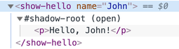

Shadow DOM 为封装而生。它可以让一个组件拥有自己的「影子」DOM 树，这个 DOM 树不能在主文档中被任意访问，可能拥有局部样式规则，还有其他特性。
你是否曾经思考过复杂的浏览器控件是如何被创建和添加样式的？
比如 <input type="range">：
浏览器在内部使用 DOM/CSS 来绘制它们。这个 DOM 结构一般来说对我们是隐藏的，但我们可以在开发者工具里面看见它。比如，在 Chrome 里，我们需要打开「Show user agent shadow DOM」选项。
然后 <input type="range"> 看起来会像这样：
你在 #shadow-root 下看到的就是被称为「shadow DOM」的东西。
我们不能使用一般的 JavaScript 调用或者选择器来获取内建 shadow DOM 元素。它们不是常规的子元素，而是一个强大的封装手段。
在上面的例子中，我们可以看到一个有用的属性 pseudo。这是一个因为历史原因而存在的属性，并不在标准中。我们可以使用它来给子元素加上 CSS 样式，像这样：
<style>
/* 让滑块轨道变红 */
input::-webkit-slider-runnable-track {
background: red;
}
</style>
<input type="range">重申一次，pseudo 是一个非标准的属性。按照时间顺序来说，浏览器首先实验了使用内部 DOM 结构来实现控件，然后，在一段时间之后，shadow DOM 才被标准化来让我们，开发者们，做类似的事。
接下来，我们将要使用现代 shadow DOM 标准，它在 DOM spec 和其他相关标准中可以被找到。
一个 DOM 元素可以有以下两类 DOM 子树：
如果一个元素同时有以上两种子树，那么浏览器只渲染 shadow tree。但是我们同样可以设置两种树的组合。我们将会在后面的章节 info:slots-composition 中看到更多细节。
影子树可以在自定义元素中被使用，其作用是隐藏组件内部结构和添加只在组件内有效的样式。
比如，这个 <show-hello> 元素将它的内部 DOM 隐藏在了影子里面：
<script>
customElements.define('show-hello', class extends HTMLElement {
connectedCallback() {
const shadow = this.attachShadow({mode: 'open'});
shadow.innerHTML = `<p>
Hello, ${this.getAttribute('name')}
</p>`;
}
});
</script>
<show-hello name="John"></show-hello>这就是在 Chrome 开发者工具中看到的最终样子，所有的内容都在「#shadow-root」下：

首先，调用 elem.attachShadow({mode: …}) 可以创建一个 shadow tree。
这里有两个限制：
elem 必须是自定义元素，或者是以下元素的其中一个：「article」、「aside」、「blockquote」、「body」、「div」、「footer」、「h1..h6」、「header」、「main」、「nav」、「p」、「section」或者「span」。其他元素，比如 <img>，不能容纳 shadow tree。mode 选项可以设定封装层级。他必须是以下两个值之一：
「open」 —— shadow root 可以通过 elem.shadowRoot 访问。
任何代码都可以访问 elem 的 shadow tree。
「closed」 —— elem.shadowRoot 永远是 null。
我们只能通过 attachShadow 返回的指针来访问 shadow DOM（并且可能隐藏在一个 class 中）。浏览器原生的 shadow tree，比如 <input type="range">，是封闭的。没有任何方法可以访问它们。
attachShadow 返回的 shadow root，和任何元素一样：我们可以使用 innerHTML 或者 DOM 方法，比如 append 来扩展它。
我们称有 shadow root 的元素叫做「shadow tree host」，可以通过 shadow root 的 host 属性访问：
// 假设 {mode: "open"}，否则 elem.shadowRoot 是 null
alert(elem.shadowRoot.host === elem); // trueShadow DOM 被非常明显地和主文档分开：
querySelector 不可见。实际上，Shadow DOM 中的元素可能与 light DOM 中某些元素的 id 冲突。这些元素必须在 shadow tree 中独一无二。比如：
<style>
/* 文档样式对 #elem 内的 shadow tree 无作用 (1) */
p { color: red; }
</style>
<div id="elem"></div>
<script></script> innerHTML。Shadow DOM 是创建组件级别 DOM 的一种方法。
shadowRoot = elem.attachShadow({mode: open|closed}) —— 为 elem 创建 shadow DOM。如果 mode="open"，那么它通过 elem.shadowRoot 属性被访问。innerHTML 或者其他 DOM 方法来扩展 shadowRoot。Shadow DOM 元素：
querySelector。Shadow DOM，如果存在的话，会被浏览器渲染而不是所谓的 「light DOM」（普通子元素）。在 info:slots-composition 章节中我们将会看到如何组织它们。